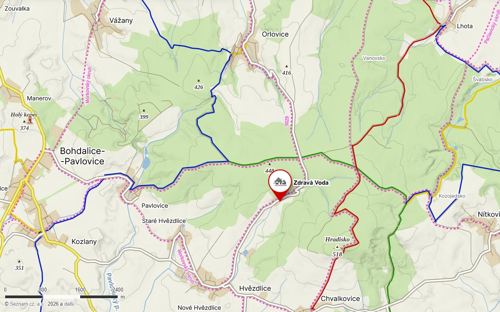

Lesní cesty, výlety na kole, zámky, jeskyně i místa, kde se děti pořádně vyřádí. Zdravá Voda je dobrým výchozím bodem pro malé výpravy i celodenní výlety.
Někdy stačí vyjít z chalupy, odbočit k lesu a nechat se vést cestou. Litenčická pahorkatina nabízí klidné lesy, zvlněnou krajinu a spoustu možností pro pěší i cyklistické výlety.
Vyrazit můžete jen na krátkou procházku před večeří nebo si naplánovat celý den v sedle. A pokud si cestou najdete hezké místo na svačinu, tím lépe.

Občas se vyplatí vyrazit za něčím novým. V okolí najdete zvířata, dinosaury, jeskyně i místa, kde se dá strávit celý den. A večer? Zpátky na chalupu. Třeba ještě stihnete opéct buřty.
Nejdřív za zvířaty, potom za dinosaury. Vyškovská zoo potěší hlavně menší děti, které si užijí Babiččin dvorek s domácími zvířaty. Do DinoParku vás pak odveze vláček a čekají tam dinosauři v životní velikosti. Na návštěvu si vyhraďte klidně celé dopoledne nebo odpoledne. Děti se tu obvykle nezastaví.
Velká pirátská loď, lanové prolézačky, maják s tobogánem a spousta místa na hraní. Hned vedle začíná naučná stezka s interaktivními zastaveními, kde si děti vyzkouší své znalosti i obratnost. A až všem vyhládne, můžete se zastavit v nedaleké restauraci Na Hrázi se zahrádkou, dalším dětským hřištěm a malým výběhem se zvířátky.
Náš tip: Naučná stezka měří přibližně 2,5 km a zvládnete ji i s kočárkem.
Kovbojové, koně, westernová představení a kulisy Divokého západu. V Boskovicích se můžete podívat na kaskadérská vystoupení, projít se mezi saloony a užít si den, který bude od běžného výletu trochu jiný.
Náš tip: Před cestou mrkněte na program vystoupení. Právě podle něj se vyplatí naplánovat příjezd.
V archeoparku se podíváte, jak se žilo za Velké Moravy. Hned vedle můžete v expozici Živá voda projít podvodním tunelem a pozorovat ryby našich řek a rybníků. Dva úplně jiné světy během jednoho výletu.
Větší zoo na Svatém Kopečku, kde se dá příjemně strávit celý den. Kromě zvířat vás čekají i hezké výhledy do okolní krajiny.
Náš tip: Pokud budou mít děti ještě energii, vystoupejte na vyhlídkovou věž. Uvidíte odtud zoo i okolní krajinu z úplně jiné perspektivy.
Na Moravě je spousta míst, kde se vyplatí na chvíli zastavit. Projít se zámeckou zahradou, nahlédnout do historie nebo objevit město, ve kterém jste ještě nebyli. A některá z nich jsou od Zdravé Vody opravdu kousek.
Barokní zámek, francouzská zahrada a místo spojené s jednou z nejznámějších bitev evropských dějin. Slavkov je krásným cílem pro nenáročný výlet, který můžete spojit s kávou nebo obědem ve městě.
Arcibiskupský zámek, Květná zahrada, Podzámecká zahrada a historické centrum plné krásných zákoutí.
Náš tip: V Květné zahradě vystoupejte na kolonádu. Z výšky nejlépe vynikne geometrické uspořádání celé zahrady.
Olomouci se ne nadarmo přezdívá hanácká Paříž. Historické centrum, barokní kašny, kostely a krásná náměstí připomínají, jak významným městem Olomouc po staletí byla. A mezi památkami najdete spoustu příjemných kaváren, kde se můžete na chvíli zastavit.
Na jednom výletě můžete spojit středověký hrad Buchlov s barokním zámkem Buchlovice a jeho zahradou. Dvě odlišná místa, každé se svou atmosférou.
Náš tip: Pokud máte rádi zahrady, vyhraďte si dost času na zámecký park v Buchlovicích. A pokud dáváte přednost historii a výhledům, začněte na hradě.
Krátký výlet za výhledy do okolní krajiny. Rozhledna Chocholík stojí na kopci nad Drnovicemi a nabízí kruhový výhled na Vyškovsko, Drahanskou vrchovinu i vzdálenější části Moravy. Výstup můžete spojit s návštěvou hezkého dětského hřiště v Drnovicích.
V horkých dnech se hodí mít po ruce i něco jiného než vlastní vířivku. V okolí najdete koupaliště i aquapark, kde si přijdou na své malí i velcí.
Bazény, tobogány a vodní atrakce pro celou rodinu. Vyškovský aquapark má celoročně otevřenou krytou část a v letních měsících také venkovní koupaliště, takže si můžete vybrat podle počasí. Dobrá volba i na den, kdy počasí nepřeje venkovním výletům.
Menší venkovské koupaliště pro příjemné letní odpoledne. Ideální, když se chcete jen vykoupat a vrátit se zase na chalupu. A až dostanete hlad, v místním kiosku si můžete dát něco dobrého na zub.
Některá místa si zaslouží celý den. Jeskyně ukryté hluboko pod zemí, rozlehlé zámecké zahrady, historická města nebo místa, kde se můžete na chvíli podívat do života našich předků.
Jeskyně, podzemní řeky a propast Macocha. Moravský kras nabízí několik zpřístupněných jeskyní, z nichž každá je trochu jiná. V Punkevních jeskyních se můžete projet na lodičkách po podzemní Punkvě, v Kateřinské jeskyni obdivovat krápníkovou výzdobu a ve Sloupsko-šošůvských jeskyních projít rozsáhlými podzemními prostory. Za návštěvu stojí také Dům přírody Moravského krasu, kde se dozvíte víc o zdejší krajině a jejím vzniku.
Historické centrum, hrad Špilberk, katedrála sv. Petra a Pavla i moderní architektura v čele s vilou Tugendhat. Brno nabízí spoustu možností, ať už vás zajímá historie, architektura, nebo si chcete jen užít den ve městě. Nechybí ani kavárny, restaurace a místa, kde se dobře najíte. S dětmi můžete navštívit VIDA! science centrum, kde si vědu vyzkoušíte na vlastní kůži.
Dva zámky, rozlehlé zahrady a krajina plná romantických staveb. Lednicko-valtický areál patří k nejkrásnějším místům jižní Moravy a nabízí spoustu možností, jak strávit celý den. Projděte se zámeckým parkem v Lednici, vydejte se k Minaretu nebo si naplánujte cyklovýlet mezi jednotlivými památkami.
Jak vypadal život na moravském venkově před sto lety? Ve strážnickém skanzenu se projdete mezi tradičními chalupami, hospodářskými staveními a ukázkami lidové architektury. Nahlédnete do starých domácností a uvidíte, jak se kdysi bydlelo, pracovalo i hospodařilo.
Památník bitvy u Slavkova stojí na Prateckém kopci, jednom z významných míst slavné bitvy tří císařů. Kromě samotného památníku a muzejní expozice nabízí také výhledy do okolní krajiny. Výlet můžete spojit s návštěvou slavkovského zámku a poznat tak dvě místa spojená se stejnou historickou událostí.